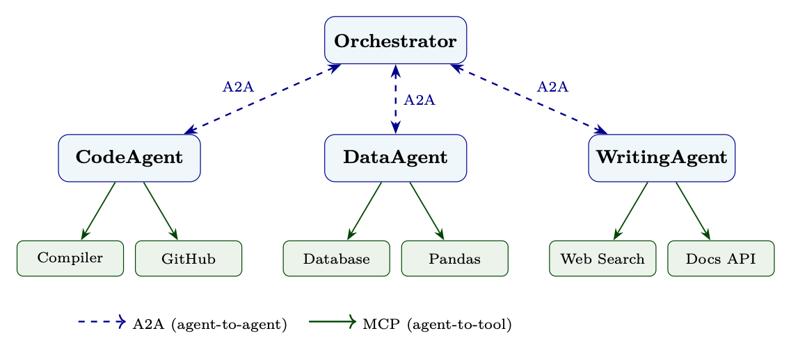

Motivation: Why Agents Must Communicate
原 PDF p.417
智能体间通信 (A2A)
随着大型语言模型从孤立的助手发展成为专业的协作网络 智能体之间如何相互交谈的问题变得与他们如何推理一样重要 内部。本节涵盖了支持多点通信的协议、模式和工程实践。 智能体系统来协调、委托和集体解决单个智能体无法解决的问题 单独处理。
动机：为什么智能体必须沟通
专业化势在必行
单一的多面手智能体面临着根本性的张力：知识的广度与知识的深度 能力。现实世界的任务——法律文件审查、多步骤科学研究、企业 软件开发——两者都需要。智能体之间的通信通过以下方式解决了这种紧张关系 允许专家网络进行协作，每个人在委派任务的同时贡献自己的优势 弱点。
有多种力量推动了对结构化智能体间通信的需求：
认知负荷和情境限制。 每个LLM都在有限的背景窗口内运作。 复杂的工作流程——跨越数百个文档、工具调用和推理步骤——很快就超过了 单个智能体可以在内存中保存什么。通过跨智能体分解任务，每个智能体运行 在可管理的上下文中，编排智能体仅维护高级状态。
专业化和专业知识。 不同的智能体可以进行微调、提示或配备工具 对于特定领域：可以访问编译器和测试运行程序的 CodeAgent，可以访问的 LegalAgent 访问判例法数据库、带有统计库的 DataAgent。将子任务路由到右侧 专家提高质量和效率。
并行性和吞吐量。 独立的子任务可以分派给多个智能体 同时。研究协调者可能会在五个专业领域展开文献检索 并行智能体，然后综合它们的结果——大大减少挂钟时间。
故障隔离和恢复能力。 当一个智能体出现故障时，设计良好的多智能体系统可以 使用不同的智能体重试，退回到更简单的方法，或者升级到人工 - 无需人工处理 崩溃了整个工作流程。
委派和交接。 长时间运行的任务可能需要在智能体之间切换 上下文发生变化。初始 PlannerAgent 分解目标，将子任务交给 ExecutorAgents，然后 最终的 ReviewerAgent 验证输出 - 每个智能体准确接收其所需的上下文。
The Google A2A Protocol
原 PDF p.418
A2A 通信的核心要求
-
可发现性：智能体必须能够找到其他智能体并了解他们的能力。
-
互操作性：由不同团队或供应商构建的智能体必须使用通用协议。
3、异步：长时间运行的任务一定不能阻塞调用者；结果通过回调到达或 投票。
- 安全性：智能体必须相互验证并强制执行授权边界。
5.可观察性：每个消息交换都必须是可追踪的，以便调试和审计。
谷歌 A2A 协议
2025 年 4 月，Google（在 50 多个技术合作伙伴的贡献下）发布了 Agent- to-Agent (A2A) 协议 [372]，一种开放规范，用于跨智能体之间的互操作通信 人工智能智能体。该协议随后被捐赠给 Linux 基金会，并已发展到 截至 2026 年，拥有超过 150 个支持组织。A2A 是围绕一组核心原则设计的，这些原则 它与早期的临时方法不同。
设计理念
A2A 规范阐明了五个指导原则（改编自官方规范 [372]，§1.2）：
A2A设计原则
执行不透明 呼叫智能体从不检查远程智能体的内部结构——它们仅通过 声明的接口。目标是 GPT-4、Gemini 还是基于规则的系统都无关紧要 该协议，实现真正的异构智能体生态系统。 企业准备就绪 身份验证（OAuth 2.0、API 密钥、JWT）、审核日志记录和法规遵从性不包括在内 事后的想法——它们从一开始就在协议级别集成。 模态不可知论 一条消息可以组合文本、二进制文件和结构化 JSON 有效负载，以适应 无需协议扩展即可对图像、音频、代码或文档进行操作的智能体。 通过现有标准实现简单性 A2A 没有发明新的传输方式，而是通过 JSON-RPC 2.0 消息重用 HTTP/HTTPS， 用于流式传输的服务器发送事件 (SSE) 和作为替代绑定的 gRPC — 这些技术 每个基础设施团队都已经开始运作。 异步优先任务模型 长时间运行的操作是常态，而不是例外。推送通知和轮询都是 一流的机制，因此调用者永远不需要保持连接数小时。
智能体卡
A2A 可发现性的基础是智能体卡——机器可读的 JSON 清单 托管在众所周知的端点 (/.well-known/agent.json)。它宣传智能体可以做什么， 如何进行身份验证以及将任务发送到何处 — 类似于 OpenAPI 规范，但适用于自治 智能体而不是 REST 端点。
智能体卡结构
# Agent
Card
served at https :// agent.example.com/.well -known/agent.json
agent_card = {
"name": " DataAnalysisAgent ",
"description": "Analyzes
structured
datasets , produces
statistical
summaries , "
原 PDF p.419
"generates
visualizations , and
answers
data
questions.",
"url": "https :// agent.example.com/a2a",
"version": "1.2.0",
"capabilities": {
"streaming": True ,
" pushNotifications ": True ,
" stateTransitionHistory ": True
},
" authentication": {
"schemes": ["Bearer", "ApiKey"]
},
"skills": [
{
"id": "statistical -analysis",
"name": "Statistical
Analysis",
"description": "Compute
descriptive
statistics , run
hypothesis
tests , "
"fit
regression
models on tabular
data.",
"tags": ["statistics", "data", "analysis", "regression"],
"examples": [
"What is the
correlation
between
columns A and B?",
"Run a t-test
comparing
these two groups.",
"Fit a linear
regression
predicting
sales
from ad spend."
],
"inputModes": ["text", "data"],
"outputModes": ["text", "data", "file"]
},
{
"id": "visualization",
"name": "Data
Visualization ",
"description": "Generate
charts , plots , and
dashboards
from data.",
"tags": ["charts", "plots", " visualization ", "dashboard"],
"examples": [
"Create a bar chart of monthly
revenue.",
"Plot the
distribution of customer
ages."
],
"inputModes": ["text", "data"],
"outputModes": ["file", "text"]
}
],
" defaultInputModes ": ["text"],
" defaultOutputModes ": ["text"]
}
智能体卡支持基于功能的路由：编排器智能体可以从注册表中获取卡， 在语义上将子任务匹配到最合适的智能体，并相应地分派——所有这些都不需要 硬编码路由logits。
任务生命周期
A2A 模型都以任务的形式工作。任务通过明确定义的状态机进行： 已提交 客户端已发送任务；服务器已确认收到。 工作 智能体正在积极处理中。客户端可以轮询或等待 SSE 事件。 需要输入 智能体需要来自用户或呼叫智能体的附加信息才能继续（例如， 澄清问题，缺少凭证）。 已完成 任务顺利完成；结果可在响应中找到。 失败的
原 PDF p.420
发生不可恢复的错误；错误消息解释了原因。 被拒绝 智能体拒绝了该任务（例如，超出其能力范围或未经授权）。 A2A v1.0 中添加。 取消 任务被客户端或服务器中止。
通过服务器发送的事件进行流式传输
对于产生增量输出的任务（例如，正在编写长报告、正在编写代码文件） 生成），A2A 使用服务器发送事件（SSE）。客户端打开一个持久的HTTP连接 并接收 JSON 事件流：
SSE 事件流示例
# Each SSE event
carries a TaskStatusUpdateEvent
or
TaskArtifactUpdateEvent
# Example
stream for a "write a research
report" task:
# Event 1: status
update
data: {
"id": "task -abc123",
"status": {"state": "working"},
"final": false
}
# Event 2: partial
artifact (streaming
text)
data: {
"id": "task -abc123",
"artifact": {
"parts": [{"type": "text", "text": "## Introduction\n\nRecent
advances in
..."}],
"index": 0,
"append": false ,
"lastChunk": false
},
"final": false
}
# Event 3: more text
appended
data: {
"id": "task -abc123",
"artifact": {
"parts": [{"type": "text", "text": " reinforcement
learning
have
shown ..."
}],
"index": 0,
"append": true ,
# append to existing
artifact
"lastChunk": false
},
"final": false
}
# Final
event: task
complete
data: {
"id": "task -abc123",
"status": {"state": "completed"},
"final": true
}
长时间运行任务的推送通知
当任务可能需要几分钟或几小时时，保持开放的 SSE 连接是不切实际的。 A2A 支持推送通知：客户端注册 webhook URL，服务器 POST 状态 随着任务的进展而更新。
Communication Patterns
原 PDF p.421
# Client
registers a push
notification
endpoint
when
submitting
the task
task_request = {
"id": "task -xyz789",
"message": {
"role": "user",
"parts": [{"type": "text", "text": "Analyze Q3 sales
data and
produce a
report."}]
},
" pushNotification ": {
"url": "https ://my -orchestrator.example.com/webhooks/a2a",
"token": "secret -hmac -token -for - 验证",
" authentication": {
"schemes": ["Bearer"],
"credentials": " eyJhbGciOiJIUzI1NiJ9 ..."
}
}
}
# The server
will POST
TaskStatusUpdateEvent
objects to the
webhook
URL
# as the task
transitions
through
states.
消息格式
A2A 消息由角色（用户或智能体）以及键入部分的列表（文本、文件或结构化 数据）。涵盖了完整的消息模式、多模式示例和上下文传递指南 在第 23.5 节中。
认证与授权
A2A 支持多种身份验证方案，在智能体卡中声明并按请求强制执行：
• 承载token（JWT/OAuth 2.0）：企业部署标准；token携带 限制允许调用智能体请求的范围。
• API 密钥：适用于内部或可信环境的更简单方案。
• 相互TLS (mTLS)：用于高安全性部署的基于证书的身份验证。
• OpenID Connect：联合身份，支持跨组织智能体通信。
授权范围执行
接收任务的智能体不仅必须验证呼叫者是谁（身份验证），还要验证呼叫者的身份 允许请求（授权）。 ReportingAgent 可能接受来自以下位置的只读数据查询： 任何经过身份验证的智能体，但将写入操作限制为持有特定 OAuth 范围的智能体。 如果不强制执行这一点，就会在多智能体系统中产生权限升级漏洞。
沟通模式
多智能体系统根据对象的性质采用多种通信模式 任务、延迟要求以及涉及的智能体数量。
请求-响应
最简单的模式：智能体 A 向智能体 B 发送任务并等待完整响应。适合 对于简短的、定义明确的子任务，在继续之前需要得到结果。
流媒体
智能体A打开SSE连接；智能体 B 在生成部分结果时对其进行流式传输。非常适合 长格式生成（报告、代码）、实时协作或渐进式 UI 更新。
原 PDF p.422
流模式用例
协调者要求写作智能体起草一份 10 页的技术文档。而不是等待 完整的文档需要 2 分钟，编排器会在编写每个部分时对其进行流式传输，从而允许 ReviewAgent 在仍在生成后面的部分时开始审阅早期部分 - 将总延迟减少 40-60% 的流水线。
多回合互动
有些任务需要迭代细化。智能体进入需要输入的状态，协调器 提供澄清，然后任务继续。这反映了人类协作工作流程：草稿→ 反馈→修改。
# Multi -turn: orchestrator
handles input -required
state
async def
run_multiturn_task (client , initial_message ):
task = await
client.send_task(message= initial_message )
while
task.status.state not in ("completed", "failed", "canceled"):
if task.status.state == "input -required":
# Agent
needs
clarification
clarification_needed = task.status.message
print(f"Agent
asks: { clarification_needed }")
# Orchestrator
generates or forwards a clarifying
response
user_reply = await
get_clarification ( clarification_needed )
# Send the reply to continue
the task
task = await
client.send_task(
task_id=task.id ,
message ={"role": "user",
"parts": [{"type": "text", "text": user_reply }]}
)
else:
# Still
working
--- poll
after a delay
await
asyncio.sleep (2)
task = await
client.get_task(task.id)
返回 任务
广播
协调器同时向多个智能体发送相同的消息——对于公告、 分配共享上下文，或触发并行独立的工作流程。
发布-订阅 (Pub-Sub)
智能体订阅事件通道（例如，新文档上传、模型重新训练）。当 事件触发，所有订阅的智能体都会收到通知。这将生产者与消费者脱钩，并使 反应式、事件驱动的架构。
洽谈
两个智能体交换提案和反提案，以就计划、资源达成一致 分配或方法。在多智能体规划系统中很常见，其中智能体有不同的 目标或限制。
谈判模式
PlannerAgent 提出一个 5 步研究计划。 ResourceAgent 响应步骤 3（运行 大型模拟）将超出计算预算。 PlannerAgent 反建议 缩小模拟。资源智能体批准。然后将商定的计划发送至
Agent Discovery and Routing
原 PDF p.423
执行智能体。
基于拍卖的任务分配
协调器宣布一项带有要求的任务；候选智能体商提交投标书（预计 完成时间、信心、成本）；协调者将任务授予中标者。这个 在智能体池中实现基于市场的动态负载平衡。
表 23.1：A2A 通信模式摘要。
图案 延迟 最适合
请求-响应 低 简短、明确的子任务 流媒体 低（第一个token） 长格式生成，实时 UI 多匝 中等 需要澄清的不明确任务 广播 低 共享上下文分布 发布-订阅 变量 事件驱动的反应式工作流程 洽谈 中-高 资源有限的规划 拍卖 中等 动态负载平衡
智能体发现和路由
在一个智能体可以与另一个智能体通信之前，它必须找到它。智能体发现的过程是 定位可以处理给定任务的智能体。
智能体登记处
智能体注册表是一种目录服务，用于索引智能体卡并提供搜索和查找 API。存在两种部署模型： 集中登记 单个权威注册表（例如企业服务目录）对所有智能体进行索引。简单到 可以运行，但会产生单点故障，并且可能无法扩展到跨组织部署。 联合登记处 多个注册中心，每个注册中心对一个域或组织具有权威性，并具有跨注册中心搜索 协议。更具弹性和隐私保护，但需要标准化的联合协议。
基于能力的路由
编排器不是硬编码智能体 URL，而是执行基于功能的路由：它们查询 注册表中匹配所需技能的智能体，然后选择最佳匹配。
class
AgentRouter:
"""Routes
tasks to agents
based on capability
matching."""
def
__init__(self , registry_url : str):
self.registry_url = registry_url
self._cache: dict[str , list[AgentCard ]] = {}
async def
find_agents(self , required_skill : str ,
tags: list[str] | None = None) -> list[AgentCard ]:
"""Query
registry
for agents
with the
required
skill."""
params = {"skill": required_skill }
if tags:
params["tags"] = ",".join(tags)
async
with
httpx.AsyncClient () as client:
resp = await
client.get(f"{self.registry_url }/ agents", params=params)
return [AgentCard (** card) for card in resp.json ()["agents"]]
async def route(self , task_description : str) -> AgentCard:
Message Formats and Schemas
原 PDF p.424
"""Semantically
match a task
description to the best
available
agent."""
# Embed the task
description
task_embedding = await
embed( task_description )
# Fetch all
registered
agents
all_agents = await
self.find_agents( required_skill ="*")
# Score
each
agent by cosine
similarity of task to agent
description
scored = []
for agent in all_agents:
agent_embedding = await
embed(agent.description)
score = cosine_similarity (task_embedding , agent_embedding )
scored.append ((score , agent))
# Return the highest -scoring
agent
scored.sort(key=lambda x: x[0], reverse=True)
return
scored [0][1]
等效智能体之间的负载平衡
当多个智能体提供相同的功能时，路由器必须分配负载。常见策略：
• 循环：在所有可用智能体之间均匀分配任务。
• 负载最少：路由到活动任务最少的智能体（需要运行状况/指标 端点）。
• 延迟感知：路由到最近响应时间最短的智能体。
• 基于关联性：将相关任务路由到同一智能体以利用缓存的上下文。
版本管理和兼容性
智能体卡包括版本字段。 Orchestrator 应指定最低版本要求 并在只有旧版本可用时处理优雅降级。语义版本控制 [373] (MAJOR.MINOR.PATCH) 推荐：破坏接口更改增量 MAJOR，新功能 递增次要。
长时间运行的系统中的版本偏差
在生产多智能体系统中，不同的智能体可能会在不同的时间更新，从而创建 版本倾斜。针对 Agent Card v2.1 编译的协调器可能仍会遇到智能体 运行 v1.3。始终实现向后兼容的消息处理并测试跨版本 明确的场景。
消息格式和模式
结构化与非结构化消息
A2A 支持从完全非结构化（纯文本）到完全结构化（类型化 JSON）的范围 模式）。正确的选择取决于所涉及的智能体：
多模式消息
A2A messages are structured as a role (user or agent) plus a list of typed parts:
现代智能体越来越多地使用非文本模式。 A2A 的 FilePart 支持任何 MIME
类型，实现丰富的多模式工作流程：
原 PDF p.425
表 23.2：结构化与非结构化 A2A 消息的权衡。
消息类型 优点 缺点
纯文本 灵活， 人类可读的， 容易生成 难以可靠地解析，没有模式验证
结构化 JSON 机器可解析， 验证 能够，打字 需要架构协议，灵活性较差
混合（文本+数据） 人类可读 意图 + 机器可解析的有效负载 构造和解析更复杂
表 23.3：A2A 消息部分类型（有线格式使用“type”： “文本”|“文件”|“数据”）。
零件类型 领域 使用案例
文本部分 文字： 字符串 自然语言指令、响应 文件部分 mimeType、uri 或字节 文档、图像、音频、代码文件 数据部分 数据： 对象 结构化 JSON（工具结果、模式）
多模式 A2A 消息：数据分析
# A message
combining
text
instructions
with a data
payload
and a file
message = {
"role": "user",
"parts": [
{
"type": "text",
"text": "Analyze
the
attached
CSV and the schema
below. "
"Identify
anomalies
and
produce a summary
report."
},
{
"type": "file",
"mimeType": "text/csv",
"uri": "https :// storage.example.com/data/sales_q3.csv"
},
{
"type": "data",
"data": {
"schema": {
"columns": ["日期"、"地区"、"产品"、"收入"、"单位"
],
"types":
["date", "string", "string", "float", "int"]
},
" expectedRowCount ": 15000 ,
" anomalyThreshold ": 3.0
# z-score
threshold
}
}
]
}
多模态 A2A 消息：图像分析
# Multi -modal
message: text + image + structured
data
multimodal_message = {
"role": "user",
"parts": [
{"type": "text",
"text": "Describe
what is wrong
with this
chart and
suggest
fixes."},
{"type": "file",
"mimeType": "image/png",
"bytes": base64.b64encode( chart_image_bytes ).decode ()},
{"type": "data",
"data": {
原 PDF p.426
"chartType": "bar",
"dataSource": "Q3 Revenue by Region",
"knownIssues": ["y 轴不从零开始",
"missing
error
bars"]
}}
]
}
上下文传递：共享什么与保持私有
多智能体系统中的一个关键设计决策是上下文范围：对话的数量 历史记录和内部状态传递给子智能体。
上下文范围原则
最小背景 仅传递子智能体完成其任务所需的内容。减少token使用、延迟和 泄露敏感信息的风险。 总结背景 不要传递原始的对话历史记录，而是传递结构化的摘要：目标、约束、 做出的决定以及相关事实。 私人国家 内部推理、中间草案和用户 PII 通常不应转发给子系统 除非明确要求，否则智能体。 相关 ID 始终传递correlationId，以便子智能体操作可以追溯到原始智能体 日志和审计跟踪中的工作流程。
对话线程和关联 ID
在复杂的工作流程中，许多任务可能同时进行。相关 ID 链接相关 跨智能体的任务：
进口 uuid
class
WorkflowContext :
"""Carries
correlation
metadata
through a multi -agent
workflow."""
def
__init__(self , workflow_id: str | None = None):
self.workflow_id = workflow_id or str(uuid.uuid4 ())
self.span_id = str(uuid.uuid4 ())
self.parent_span_id : str | None = None
def
child_context(self) -> " WorkflowContext ":
"""Create a child
context for a sub -task."""
child = WorkflowContext (workflow_id=self.workflow_id)
child. parent_span_id = self.span_id
return
child
def
to_metadata(self) -> dict:
return {
"x-workflow -id": self.workflow_id ,
"x-span -id": self.span_id ,
"x-parent -span -id": self. parent_span_id
}
# Usage: attach to every A2A task
submission
ctx = WorkflowContext ()
task = await
client.send_task(
message=message ,
metadata=ctx.to_metadata ()
Coordination Protocols
原 PDF p.427
)
# Sub -tasks use child
contexts
for
tracing
sub_ctx = ctx.child_context ()
协调协议
除了点对点通信之外，多智能体系统还受益于更高级别的协调 协议——支持集体决策和解决问题的结构化交互模式 解决。
合约网协议
合约网络协议（CNP）[374]是一种经典的多智能体协调机制 对于基于LLM的系统：
1.公告：管理者智能体向所有潜在的参与者广播任务公告 拖拉机智能体，包括任务要求和评估标准。
-
招标：承包商智能体根据自己的能力评估任务并提交投标书 包含预计完成时间、置信度和资源需求。
-
奖励：经理选择中标（或并行子任务的多个投标）并 授予合同。
-
执行和报告：承包商执行任务并将结果报告给承包商 经理。
合约网协议实现
import
dataclasses
class
ContractNetManager :
"""Implements
the
Contract
Net
Protocol
for task
allocation."""
async def
allocate_task(self , task: Task ,
candidate_agents : list[AgentCard ]) -> AgentCard:
# Phase 1: Announce
task to all
candidates
announcement = {
"type": "task -announcement",
"task": dataclasses.asdict(task),
"deadline": (datetime.now(timezone.utc) + timedelta(seconds =10)).
isoformat (),
" evaluationCriteria ": ["confidence", " estimatedTime ", "cost"]
}
# Phase 2: Collect
bids
bids = await
asyncio.gather (*[
self._request_bid(agent , announcement )
for agent in candidate_agents
], return_exceptions =True)
valid_bids = [(agent , bid) for agent , bid in zip(candidate_agents , bids
)
if not
isinstance(bid , Exception) and bid is not None]
if not
valid_bids:
raise
RuntimeError(f"No agents bid on task {task.id}")
# Phase 3: Award to best
bidder (highest
confidence , lowest
time)
def
score_bid(agent_bid):
_, bid = agent_bid
原 PDF p.428
return bid["confidence"] - 0.1 * bid[" estimatedSeconds "]
winner_agent , winning_bid = max(valid_bids , key=score_bid)
# Notify
winner and losers
await
self. _award_contract (winner_agent , task)
await
asyncio.gather (*[
self._reject_bid(agent , task.id)
for agent , _ in valid_bids if agent != winner_agent
])
return
winner_agent
async def
_request_bid(self , agent: AgentCard ,
announcement : dict) -> dict | None:
"""Ask an agent to bid on a task."""
try:
result = await
self.client.send_task(
agent_url=agent.url ,
message ={"role": "user",
"parts": [{"type": "data", "data": announcement }]}
)
return
result.artifacts [0]. parts [0]["data"]
except
Exception:
return
None
黑板系统
黑板系统[321]提供了一个共享工作空间（“黑板”），智能体可以在其中发布信息 部分解决方案、观察结果和假设。其他坐席监视黑板并做出贡献 当他们可以增加价值时——一种机会主义的解决问题的方法。 黑板系统非常适合解决事先未知解决方案路径的问题 不同的智能体可能在不同的阶段做出贡献——例如科学假设的生成， 复杂的调试，或多源情报分析。
共识协议
当多个智能体必须就一项决定达成一致时（例如，执行哪个计划、结果是否正确） 正确），共识协议提供结构化投票机制： 简单多数投票 每位智能体投票；得票率 > 50% 的选项获胜。快速但容易受到相关错误的影响，如果 智能体共享相同的基本模型。 加权投票 投票根据智能体信心或历史准确性进行加权。更稳健，但需要校准 置信度估计。 基于法定人数 决策需要 n 个智能体中至少 k 个的同意。提供容错能力：高达 n −k 智能体可以失败或不同意而无需阻止。 德尔菲法 智能体投票，查看匿名结果，修改他们的投票，然后重复直到收敛。减少 消除偏见并鼓励真正的深思熟虑。
async def
quorum_vote(agents: list[AgentCard], question: str ,
options: list[str], quorum: int) -> str | None:
"""Run a quorum
vote
across
agents. Returns
winning
option or None."""
votes = await
asyncio.gather (*[
ask_agent_to_vote (agent , question , options)
for agent in agents
])
A2A vs. MCP: Complementary Protocols
原 PDF p.429
counts: dict[str , int] = {}
for vote in votes:
if vote in options:
counts[vote] = counts.get(vote , 0) + 1
# Return
first
option
that
reaches
quorum
for option , count in sorted(counts.items (), key=lambda x: -x[1]):
if count
>= quorum:
return
option
return
None
# No quorum
reached
领导人选举
在动态多智能体系统中，可能需要在运行时选举一个领导者（协调者） 例如，当原始协调器发生故障或智能体在没有预先分配的情况下自组织时 协调员。经典的分布式系统算法（Bully、Ring）可以适用于智能体网络， 与智能体交换能力分数或优先级token来选择最有能力的可用智能体 作为领导者。
A2A 与 MCP：补充协议
一个常见的混淆来源是 A2A 和模型上下文协议之间的关系 （MCP）[335]。这些协议是互补的，而不是竞争的：
核心区别
• MCP 是垂直协议：它将智能体向下延伸到数据库世界， API、文件系统和代码执行器。 仅智能体原因； MCP 端点是 确定性服务。
• A2A 是水平协议：它将一个推理智能体连接到另一个推理智能体。双方都是 能够推理、计划和使用工具的智能参与者。
尺寸 MCP A2A
参加者 智能体↔工具/资源 智能体 ↔智能体 情报 一侧（智能体）是智能的 双方都是聪明人 状态性 通常是无状态工具调用 具有生命周期的有状态任务 流媒体 有限（工具结果） 一流的 SSE 流媒体 发现 工具清单 智能体卡 认证模型 服务器控制 相互，OAuth 2.0 典型延迟 毫秒 秒到分钟 使用案例 “搜索网络”、“运行 SQL” “委托给专家”
何时使用哪个
• 当远程端点是确定性函数时使用MCP：数据库查询、API call，代码执行沙箱。智能体完全控制交互。
• 当远程端点需要推理请求时使用 A2A：解释不明确的内容 指示、做出判断、使用自己的工具或进行多轮对话。
• 在同一系统中使用两者：编排器智能体使用 A2A 委托给专家智能体， 每个专业智能体都使用 MCP 来访问其工具。
Security and Trust in Multi-Agent Systems
原 PDF p.430
组合架构
在生产多智能体系统中，A2A 和 MCP 在不同层协同工作：A2A 句柄 智能体间授权和协调（同行之间的水平通信），而 MCP 处理每个智能体与其工具和数据源的连接（与功能的垂直集成）。 这种关注点分离是构建可扩展智能体架构的关键。
图 23.1：A2A + MCP 组合架构。协调者通过 A2A 委托给专业智能体； 每个智能体通过 MCP 服务器访问其工具。
• A2A 委派：当智能体需要其不具备的能力时，它将委派给 另一个智能体通过 A2A 任务消息。每个智能体都是一个独立的服务，有自己的 智能体卡。
• 用于工具访问的MCP：每个智能体通过MCP 服务器连接到其工具。这意味着 工具永远不会直接暴露给其他智能体——只能通过所属智能体的界面。
• 信任边界分离：编排者信任专业智能体（通过验证） A2A 认证）。每个专家都信任自己的 MCP 服务器（本地或经过身份验证的）。 没有传递工具访问。
• 独立扩展：代码密集型工作负载可以扩展CodeAgent 实例；数据工作- 加载规模 DataAgent。编排器仍然是轻量级的。
多智能体系统的安全性和信任
多智能体系统带来了独特的安全挑战。当智能体A委托给智能体B时， 将其委托给智能体 C 时，必须仔细管理信任链。
智能体身份验证
每个智能体都必须拥有可验证的身份。选项包括：
• JWT token[375]由受信任的身份提供商签名，携带智能体的 ID、发行者和 到期。由接收智能体使用提供者的公钥进行验证。
• 由内部CA颁发的mTLS证书[376]，提供身份验证和传输 加密。
• 去中心化标识符（DID）[377]，适用于没有单一标识符的跨组织场景 存在值得信赖的权威。

图像：原 PDF p.430原 PDF p.431
消息完整性和加密
• 所有 A2A 通信均应通过 TLS 1.3 [378] 进行，以防止窃听和 中间人攻击。
• 对于敏感负载，端到端加密（例如 JWE）可确保中间基础设施 结构（负载均衡器、智能体）无法读取消息内容。
• 消息签名 (JWS) 提供不可否认性：接收智能体可以证明 特定消息来自特定发件人。
授权范围
并非每个智能体都应该能够要求其他所有智能体做任何事情。 OAuth 2.0授权 范围[379]定义了边界：
# Example
OAuth 2.0 scopes for a DataAgent
SCOPES = {
"data:read":
"Read data from
connected
databases",
"data:write":
"Write or modify
data in connected
databases",
"data:export":
"Export
data to external
systems",
"analysis:run":
"Execute
statistical
analyses",
"analysis:schedule":"Schedule
recurring
analyses",
"admin:config":
"Modify
agent
configuration "
}
# A ReportingAgent
might
hold only: data:read , analysis:run
# An ETL
pipeline
agent
might
保持：数据：读取，数据：写入，数据：导出
# Only a human
admin
holds: admin:config
class
A2AServer:
def
verify_authorization (self , token: str , required_scope : str) -> bool:
"""Verify
that the
calling
agent
holds the
required
scope."""
claims = jwt.decode(token , self.public_key , algorithms =["RS256"])
granted_scopes = claims.get("scope", "").split ()
if required_scope
not in granted_scopes :
raise
PermissionError (
f"Caller
lacks
required
scope
’{ required_scope }’. "
f"Granted: { granted_scopes }"
)
return
True
审计追踪和责任
责任差距
在智能体委托链中，谁负责某项操作可能会变得不清楚。如果智能体A 要求Agent B删除文件，Agent B这样做了，谁负责？每一次 A2A 互动 必须记录以下内容：调用智能体的身份、任务描述、使用的授权token、 时间戳和结果。此审计跟踪对于事件响应、合规性、 和调试。
每个 A2A 服务器都应该发出结构化审核日志：
@dataclass
class
A2AAuditEvent:
timestamp: str
# ISO 8601
workflow_id: str
# Correlation ID for the top -level
workflow
span_id: str
# This task ’s span
parent_span_id : str
# Calling
task ’s span (for
delegation
chains)
caller_agent_id : str
# Verified
identity of the
calling
agent
callee_agent_id : str
# This
agent ’s identity
task_id: str
Implementation Example: Multi-Agent Research Workflow
原 PDF p.432
skill_invoked: str
authorization_scopes : list[str]
outcome: str
# "completed" | "failed" | "rejected"
duration_ms: int
error_code: str | None
实施示例：多智能体研究工作流程
以下示例演示了使用 A2A 的完整多智能体研究工作流程： OrchestratorAgent 分解研究问题，委托给专业智能体，然后综合 他们的结果。
"""
Multi -agent
research
workflow
using A2A
protocol.
演示：智能体卡、A2A 客户端/服务器、任务
lifecycle ,
multi -turn
interaction , and agent
handoffs.
"""
import
asyncio
import
json
import
uuid
from
collections.abc import
AsyncIterator
from
datetime
import
datetime , timedelta , timezone
import
httpx
from
fastapi
import
FastAPI , HTTPException , Request
from
fastapi.responses
import
StreamingResponse
from
pydantic
import
BaseModel , Field
# -- Data
Models
--------------------------------------------------------------
class
Part(BaseModel):
type: str
# "text" | "file" | "data"
text: str | None = None
data: dict | None = None
mimeType: str | None = None
uri: str | None = None
class
Message(BaseModel):
role: str
# "user" | "agent"
parts: list[Part]
class
TaskStatus(BaseModel):
state: str
# 已提交 |工作|需要输入|已完成 |
failed
message: str | None = None
timestamp: str = Field(
default_factory =lambda: datetime.now(timezone.utc).isoformat ()
)
class
Artifact(BaseModel):
parts: list[Part]
index: int = 0
append: bool = False
lastChunk: bool = True
class
Task(BaseModel):
id: str
status: TaskStatus
messages: list[Message] = []
artifacts: list[Artifact] = []
metadata: dict = {}
# -- A2A Client (HTTP/REST
binding) --------------------------------------------
原 PDF p.433
# Note: A2A v1.0 defines
three
protocol
bindings: JSON -RPC 2.0, gRPC , and
# HTTP+JSON/REST. This
example
uses the REST
binding
for
readability.
class
A2AClient:
"""Client for
sending
tasks to A2A -compliant
agents."""
def
__init__(self , agent_url: str , auth_token: str):
self.agent_url = agent_url.rstrip("/")
self.headers = {
"Authorization": f"Bearer {auth_token}",
"Content -Type": "application/json"
}
async def
get_agent_card(self) -> dict:
"""Fetch the agent ’s capability
card."""
async
with
httpx.AsyncClient () as client:
resp = await
client.get(
f"{self.agent_url }/.well -known/agent.json",
headers=self.headers
)
resp. raise_for_status ()
return
resp.json ()
async def
send_task(self , message: Message ,
task_id: str | None = None ,
metadata: dict | None = None) -> Task:
"""Submit a task and return the
initial
task
object."""
payload = {
"id": task_id or str(uuid.uuid4 ()),
"message": message.model_dump (),
"metadata": metadata or {}
}
async
with
httpx.AsyncClient () as client:
resp = await
client.post(
f"{self.agent_url }/ tasks/send",
json=payload ,
headers=self.headers ,
timeout =30.0
)
resp. raise_for_status ()
return
Task (** resp.json ())
async def
stream_task(self , message: Message ,
metadata: dict | None = None) -> AsyncIterator [dict ]:
"""Submit a task and stream SSE events."""
payload = {
"id": str(uuid.uuid4 ()),
"message": message.model_dump (),
"metadata": metadata or {}
}
async
with
httpx.AsyncClient () as client:
async
with
client.stream(
"POST",
f"{self.agent_url }/ tasks/ sendSubscribe ",
json=payload ,
headers ={** self.headers , "Accept": "text/event -stream"},
timeout =300.0
) as response:
async for line in response.aiter_lines ():
if line.startswith("data: "):
event_data = json.loads(line [6:])
yield
event_data
if event_data.get("final"):
休息
async def
get_task(self , task_id: str) -> Task:
原 PDF p.434
"""Poll for task
status."""
async
with
httpx.AsyncClient () as client:
resp = await
client.get(
f"{self.agent_url }/ tasks /{ task_id}",
headers=self.headers
)
resp. raise_for_status ()
return
Task (** resp.json ())
async def
wait_for_completion (self , task: Task ,
poll_interval : float = 2.0) -> Task:
"""Poll
until
task
reaches a terminal
state."""
terminal_states = {"completed", "failed", "canceled"}
while
task.status.state not in terminal_states :
await
asyncio.sleep(poll_interval )
task = await
self.get_task(task.id)
return
task
# -- A2A Server (FastAPI) -----------------------------------------------------
class
ResearchAgent:
"""
A specialist
research
agent
that
searches
literature
and
summarizes
findings on a given
topic.
"""
AGENT_CARD = {
"name": "ResearchAgent",
"description": "Searches
academic
literature
and
synthesizes
research
findings.",
"url": "https :// research -agent.example.com/a2a",
"version": "1.0.0",
"capabilities": {
"streaming": True ,
" pushNotifications ": False ,
" stateTransitionHistory ": True
},
" authentication": {"schemes": ["Bearer"]},
"skills": [{
"id": "literature -search",
"name": "Literature
Search",
"description": "Search and
summarize
academic
papers on a topic.",
"tags": ["research", "literature", "academic", "papers"],
"examples": [
"Summarize
recent
papers on transformer
attention
mechanisms.",
"What does the
literature
say about
RLHF for code
generation?"
],
"inputModes": ["text"],
"outputModes": ["text", "data"]
}]
}
def
__init__(self):
self.tasks: dict[str , Task] = {}
self.app = FastAPI(title=" ResearchAgent
A2A Server")
self. _register_routes ()
def
_register_routes (self):
@self.app.get("/.well -known/agent.json")
async def
agent_card ():
return
self.AGENT_CARD
@self.app.post("/tasks/send")
async def
send_task(request: Request):
body = await
request.json ()
task = await
self. _create_and_run_task (body)
原 PDF p.435
return
task.model_dump ()
@self.app.post("/tasks/sendSubscribe ")
async def
send_subscribe(request: Request):
body = await
request.json ()
return
StreamingResponse (
self._stream_task(body),
media_type="text/event -stream"
)
@self.app.get("/tasks /{ task_id}")
async def
get_task(task_id: str):
if task_id
not in self.tasks:
raise
HTTPException (status_code =404 , detail="Task not found")
return
self.tasks[task_id ]. model_dump ()
async def
_create_and_run_task (self , body: dict) -> Task:
task_id = body.get("id", str(uuid.uuid4 ()))
message = Message (** body["message"])
任务 = 任务（
id=task_id ,
status=TaskStatus(state="submitted"),
messages =[ message],
metadata=body.get("metadata", {})
)
self.tasks[task_id] = task
# Run
asynchronously
asyncio.create_task(self._execute_task (task_id))
return
task
async def
_execute_task(self , task_id: str):
task = self.tasks[task_id]
task.status = TaskStatus(state="working")
尝试：
# Extract
the
research
question
from the
message
question = task.messages [0]. parts [0]. text
# Simulate
literature
search (replace
with real
search
tool)
await
asyncio.sleep (1)
# Simulated
latency
findings = await
self. _search_literature (question)
# Produce
artifact
task.artifacts = [Artifact(parts =[
Part(type="text", text=findings["summary"]),
Part(type="data", data ={"papers": findings["papers"],
"query": question })
])]
task.status = TaskStatus(state="completed")
except
Exception as e:
task.status = TaskStatus(state="failed", message=str(e))
self.tasks[task_id] = task
async def
_search_literature (self , question: str) -> dict:
“”“占位符：在生产中，调用真实的
search API."""
return {
"summary": f"Based on a search of recent
literature
regarding "
f" ’{question}’, key
findings
include: ...",
"papers": [
{"title": "Attention Is All You Need", "year": 2017 ,
"relevance": 0.95} ,
{"title": "RLHF: Training
Language
Models to Follow
Instructions",
原 PDF p.436
"year": 2022, "relevance": 0.88}
]
}
async def
_stream_task(self , body: dict) -> AsyncIterator [str]:
task = await
self. _create_and_run_task (body)
# Stream
status
updates
yield f"data: {json.dumps ({’id ’: task.id , ’status ’: {’state ’: ’submitted
’}, ’final ’: False })}\n\n"
yield f"data: {json.dumps ({’id ’: task.id , ’status ’: {’state ’: ’working ’},
’final ’: False })}\n\n"
# Wait for
completion
while
task.status.state not in ("completed", "failed", "canceled"):
await
asyncio.sleep (0.5)
task = self.tasks[task.id]
# Stream the
artifact
if task.artifacts:
for part in task.artifacts [0]. parts:
event = {
"id": task.id ,
"artifact": {
"parts": [part.model_dump ()],
"index": 0,
"append": False ,
"lastChunk": True
},
"final": False
}
yield f"data: {json.dumps(event)}\n\n"
# Final
status
yield f"data: {json.dumps ({’id ’: task.id , ’status ’: task.status.model_dump
(), ’final ’: True })}\n\n"
# -- Orchestrator: Multi -Agent
Workflow
----------------------------------------
class
ResearchOrchestrator :
"""
Orchestrates a multi -agent
research
workflow:
1. Decomposes
the
research
question
into sub -questions
2. Dispatches
向 ResearchAgent 提出每个子问题
3. Synthesizes
results
into a final
report
"""
def
__init__(self , research_agent_url : str , auth_token: str):
self.research_client = A2AClient(research_agent_url , auth_token)
self.workflow_id = str(uuid.uuid4 ())
async def run(self , research_question : str) -> str:
print(f"[Orchestrator] Starting
workflow {self.workflow_id}")
print(f"[Orchestrator] Question: { research_question }")
# Step 1: Decompose
into sub -questions
sub_questions = self._decompose( research_question )
print(f"[Orchestrator] Decomposed
into {len( sub_questions )} sub -questions"
)
# 第 2 步：并行分派子问题
tasks = await
asyncio.gather (*[
self. research_client .send_task(
message=Message(role="user", parts =[ Part(type="text", text=q)]),
metadata ={"workflowId": self.workflow_id , "subQuestion": i}
)
小结
原 PDF p.437
for i, q in enumerate( sub_questions )
])
# Step 3: Wait for all tasks to complete
completed_tasks = await
asyncio.gather (*[
self. research_client . wait_for_completion (task)
for task in tasks
])
# Step 4: Check for
failures
failed = [t for t in completed_tasks if t.status.state == "failed"]
if failed:
print(f"[Orchestrator] Warning: {len(failed)} sub -tasks
failed")
# Step 5: Synthesize
results
findings = []
for task , question in zip(completed_tasks , sub_questions ):
if task.status.state == "completed" and task.artifacts:
summary = task.artifacts [0]. parts [0]. text
findings.append(f"### {question }\n{summary}")
report = self._synthesize(research_question , findings)
print(f"[Orchestrator] Workflow
complete. Report: {len(report)} chars")
return
report
def
_decompose(self , question: str) -> list[str]:
"""Decompose a complex
question
into
focused sub -questions."""
# 在生产中：使用LLM来分解
return [
f"What are the
foundational
methods
for: {question }?",
f"What are the most
recent
advances in: {question }?",
f"What are the open
challenges
and
limitations in: {question }?"
]
def
_synthesize(self , question: str , findings: list[str]) -> str:
"""Synthesize sub -findings
into a coherent
report."""
# 在生产中：使用LLM来综合
sections = "\n\n".join(findings)
return f"# Research
Report: {question }\n\n{sections}"
# -- Entry
Point
---------------------------------------------------------------
async def main ():
orchestrator = ResearchOrchestrator (
research_agent_url ="https :// research -agent.example.com/a2a",
auth_token=" eyJhbGciOiJSUzI1NiJ9 ..."
)
report = await
orchestrator.run(
" Reinforcement
learning
from
human
feedback
for large
language
models"
)
print(report)
if __name__ == "__main__":
asyncio.run(main ())
总结
要点：智能体之间的通信
- A2A 实现大规模专业化：通过将任务分配给专业智能体，多方 智能体系统同时实现深度和广度。 （第 24 章介绍了多智能体 深入架构。）
原 PDF p.438
-
Google 的 A2A 协议为可互操作提供了生产就绪的开放标准 智能体通信，使用智能体卡、任务生命周期管理、SSE 流和 企业认证。
-
通信模式从简单的请求-响应到复杂的协商和 基于拍卖的分配——根据任务复杂性和延迟需求进行选择。
-
A2A和MCP是互补的：A2A连接智能体到智能体； MCP 连接 智能体到工具。大多数生产系统都使用两者。
-
安全不容妥协：智能体身份验证、授权范围、审核 跟踪在任何多智能体部署中都是必不可少的。
-
协调协议（Contract Net、Blackboard、Consensus）提供结构化机制 集体决策超越简单的授权。
-
通过关联 ID 实现的可观察性对于调试和审计复杂性至关重要 跨越许多智能体和工具的多智能体工作流程。
A2A 中的开放研究问题
• 智能体应如何处理来自层次结构中多个协调器的冲突指令？ 哪些冲突解决机制最有效？
• 智能体能否通过经验而非传统方式学习更好的路由和委派策略？ 依赖静态能力声明？
• 我们如何防止恶意智能体操纵下行的即时注入攻击 通过在其消息中嵌入对抗性指令来流智能体？
• 上下文传递的正确隐私边界是什么——对话历史记录有多少 子智能体应该看到吗？我们如何从技术上强制执行这些边界？
• 随着座席网络发展到数百或数千个座席，我们如何保持一致 全局状态不会造成瓶颈或一致性违规？